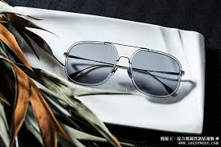

Aviator Silver Glass
is a stylish and classic line of eyewear that is inspired by the iconic aviator style. The glasses feature a
sleek and streamlined design that is both fashionable and functional.
The frames of the Aviator Silver Glass
are made of lightweight and durable materials, such as metal or titanium. The frames have a
slim profile and a silver finish, which gives the glasses a modern and sophisticated look.
The aviator style of the glasses is designed to fit a variety of face shapes and sizes, making them a versatile option for anyone who wants to make a statement with their eyewear.
The lenses of the Aviator Silver Glass
are tinted in a neutral color, such as gray or brown, to provide excellent UV protection and enhance visual clarity. The lenses are also
polarized, which helps to reduce glare from the sun and improve visibility in bright conditions.